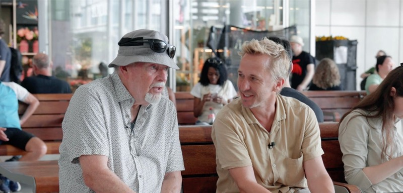
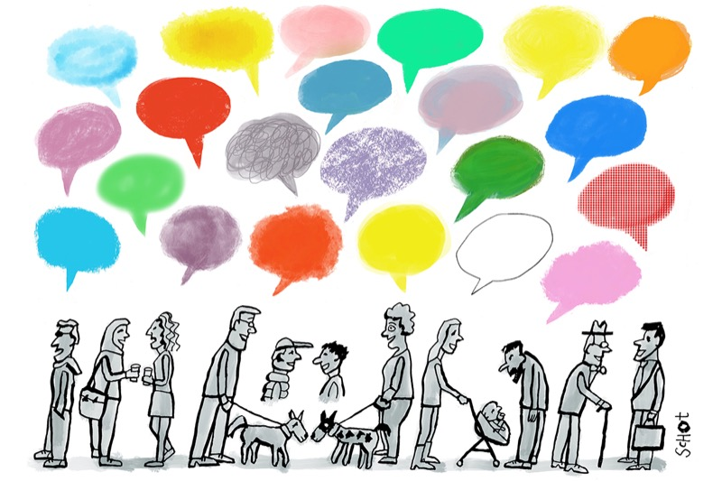
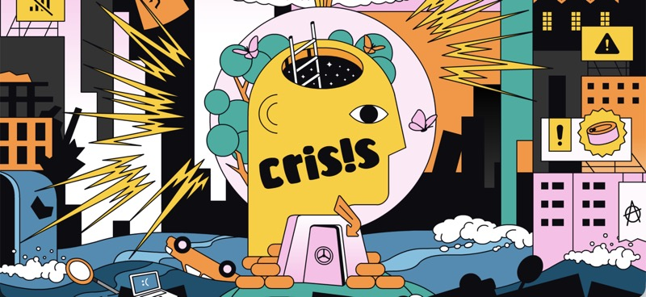
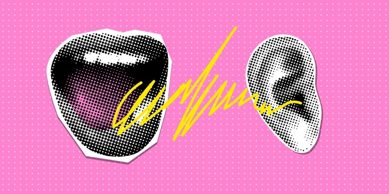
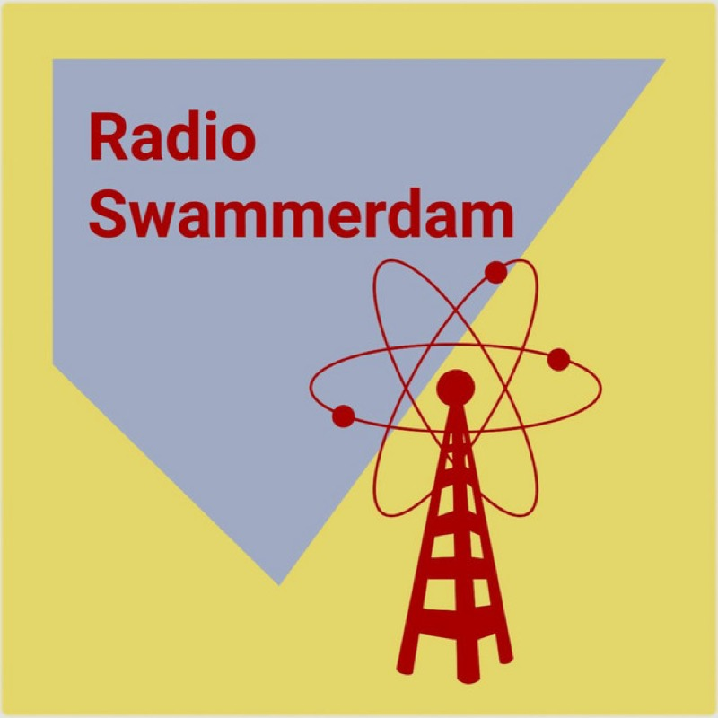
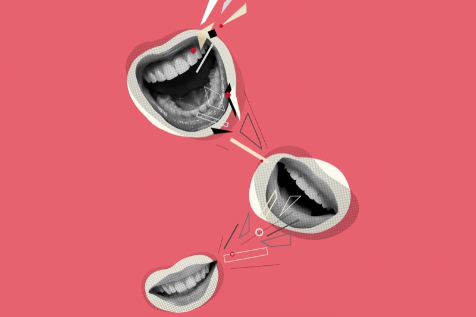
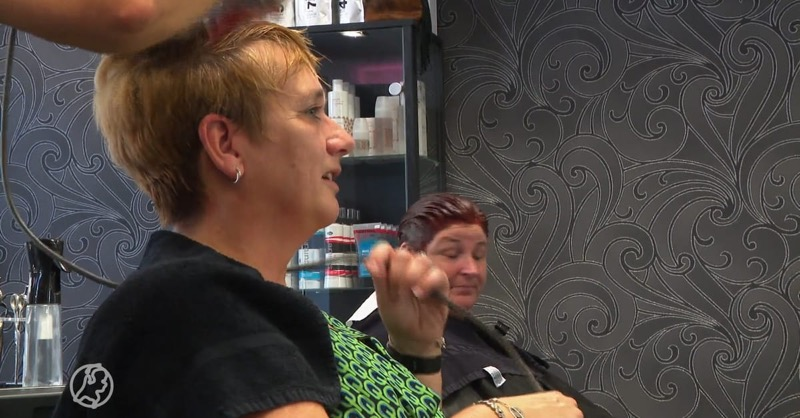
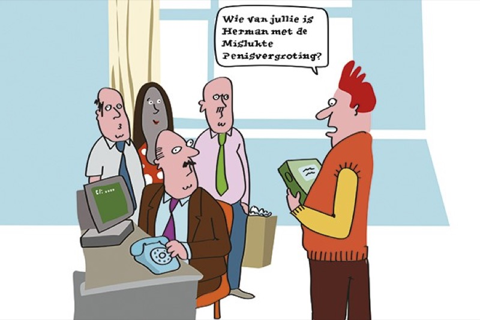
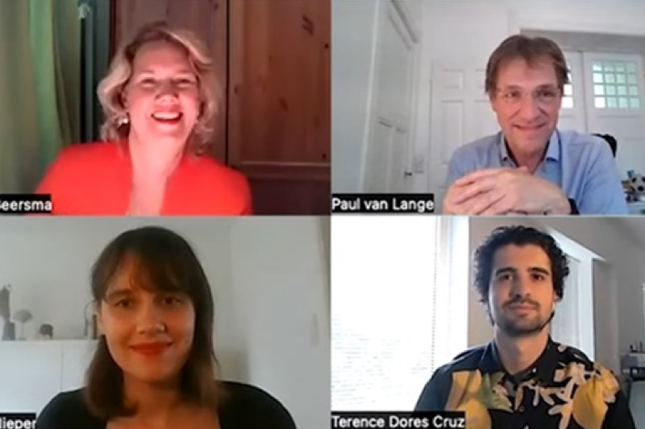
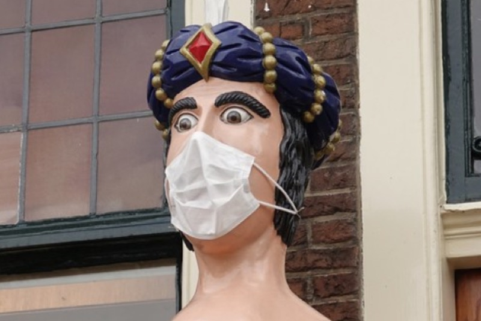

Selected media coverage
 Universiteit van NederlandVan een praatje word je gelukkiger
Universiteit van NederlandVan een praatje word je gelukkiger- Spijkers met Koppen (NPO Radio 2)Spijkers met Koppen (NPO Radio 2)Maak ook eens een praatje, daar word je blij van

Vrije Universiteit AmsterdamVU-onderzoek: een praatje hangt samen met meer geluk, vertrouwen en sociale verbondenheid- Het ParoolHet ParoolOpinie: ‘De drempel voor een praatje op straat is te groot geworden. Als we zo doorgaan, glijden we af naar een zwijgzame maatschappij’

Ad ValvasWe maken te weinig praatjes op straat
De Nacht van… (NPO Radio 1)Maak een praatje; dat helpt je in een crisis- De Dikke Data Show (VPRO, NPO)Juicekanalen

Women's HealthGossip Can Be (Kinda) Good For You—But Only If You Follow These Rules
Radio SwammerdamTussen feit en fictie - De functie én het belang van roddelen
Scientific AmericanThe Surprising Benefits of Gossip- The EconomistThe EconomistPssst! Want to read something about rumour and innuendo?Gossip in the workplace

Hart van NederlandTwee op de drie Nederlanders roddelt weleens: het liefst over deze dingen- LadderZat (VU Campus Radio)Onderzoek, met Terence Dores Cruz | LadderZat #1

Ad ValvasWaarom wij heel veel roddelen- BNR WerkverkennersBNR WerkverkennersRoddelen op het werk

Ad ValvasVU-wetenschappers winnen Ig Nobelprijs voor onderzoek naar roddelen- NOS JeugdjournaalWaarom niemand roddelen leuk vindt, maar iedereen het tóch doet
- NU.nlNU.nlHoe erg is roddelen op het werk?
- de Volkskrantde VolkskrantDoe jij mee met kantoorroddels?
- NEMO KennislinkMeer thuiswerken, minder geroddel
- New ScientistRoddelen is hartstikke nuttig voor je netwerk
- Het ParoolHet ParoolWaarom roddelen essentieel is voor ons sociale leven
- Business & Management INK (Social Science Space)Have You Heard the Latest About Workplace Gossip?

Ad ValvasRoddelen tegen corona